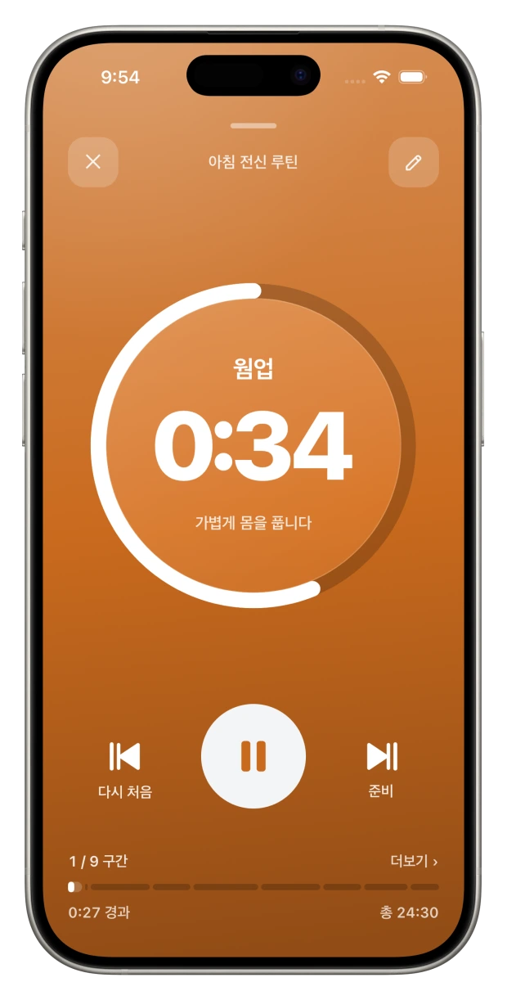
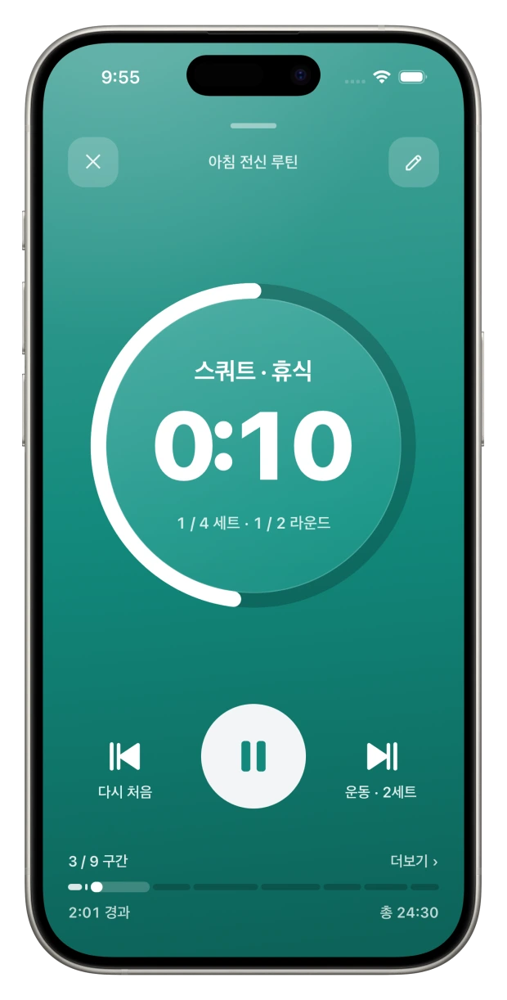
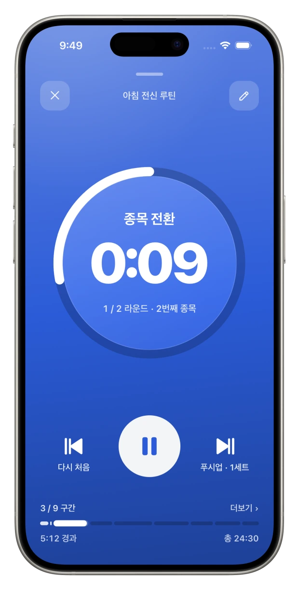

01
화면을 안 봐도 됩니다
운동인지 휴식인지 색으로 구분됩니다. 소리와 진동이 구간을 알려주고, 앱을 완전히 종료해도 알림은 그대로 울립니다.

광고 없음 · 앱 내 구입 없음 · 로그인 없음
결제 화면이 없고, 음악을 안 줄이고, 운동이 끝나면 알아서 기록됩니다.
iOS · 한국어 · 영어 · 일본어 · 중국어





구간이 바뀌면 화면 전체 색이 바뀝니다.
소리와 진동도 함께 울리니, 화면은 안 봐도 됩니다.
01
운동인지 휴식인지 색으로 구분됩니다. 소리와 진동이 구간을 알려주고, 앱을 완전히 종료해도 알림은 그대로 울립니다.
02
듣던 노래를 멈추거나 작게 만들지 않습니다. 알림음은 음악과 겹치지 않는 대역으로 따로 만들어 그 위에 얹습니다.
03
운동을 끝내면 총 시간과 순수 운동 시간, 완료한 세트가 달력에 알아서 남습니다. 따로 입력하는 화면이 없습니다.
총 시간·순수 운동 시간·완료한 세트가 자동으로 기록됩니다. 운동한 날은 청록색 농도로 칠해집니다. 입력하는 화면이 없다는 게 증거입니다.

왜 만들었나
세트 사이 30초를 재는 데 매달 돈을 내라는 게 이상했습니다.
인타바에는 결제 화면 자체가 없습니다. 잠긴 기능도, 광고도, 회원가입도 없습니다.
서버를 쓰지 않습니다. 루틴도 운동 기록도 폰 안에만 있어서 제가 내는 유지비가 0원입니다. 그래서 나중에 과금으로 돌아설 이유가 생기지 않습니다.
대신 데이터가 자동으로 옮겨가지는 않습니다. 기기를 바꿀 땐 내보내기·불러오기로 파일 하나를 옮기면 됩니다. 서버가 없다는 건 그런 뜻입니다.